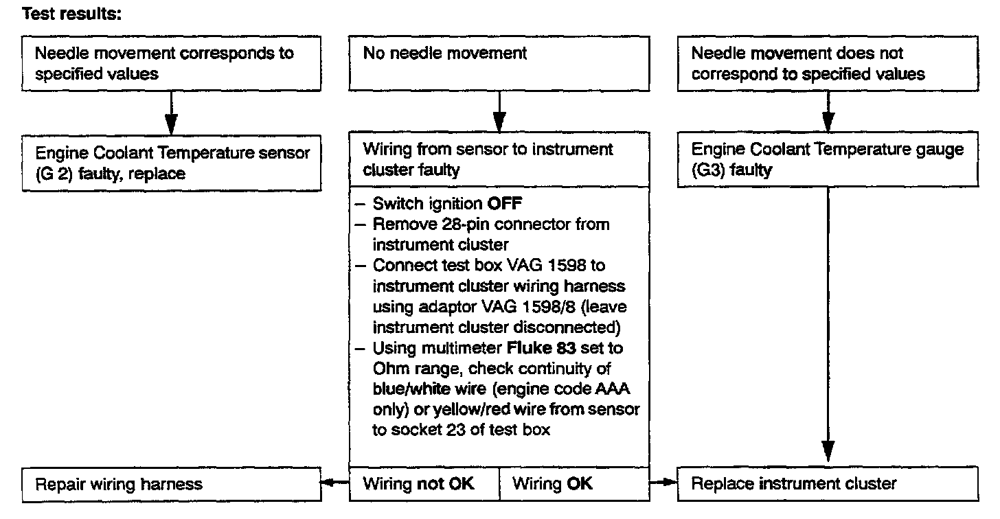

Checking Engine Coolant Temperature (ECT) Gauge


ENGINE COOLANT TEMPERATURE (ECT) GAUGE, CHECKING
NOTE: If the fuel gauge and Engine Coolant Temperature (ECT) gauge simultaneously indicate false readings, replace the instrument cluster.
Troubleshooting preparations:
- Remove connector from Engine Coolant Temperature sensor (G2).
- For all vehicles except those equipped with 2.8L VR6 (engine code AAA), connect tester VW 1301 to yellow/ red and brown/white connector wires using connector test kit VW 1594.
- For vehicles equipped with 2.8L VR6 (engine code AAA), connect tester VW 1301 to blue/white and brown connector wires using connector test kit VW 1594
Set following values on tester VW 1301:
75 See Engine Coolant Temperature gauge reads 230 °F/110 °C
190 See Engine Coolant Temperature gauge reads 160 °F/70 °C
Permissible deviation: One needle width!